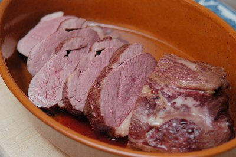

| Zutaten für 4 Personen: | |
| 1 El | Erdnussöl |
| 2-4 | Entenbrüstli |
Ofen auf 80°C, Umluft oder Ober- und Unterhitze 15 Minuten vorheizen.
Leere, ofenfeste Form in die Mitte des Ofens schieben. (Teller bereits mitwärmen)
Erdnussöl in der Bratpfanne erhitzen
Die Entenbrüstli kalt abspülen und mit Küchenpapier trocken tupfen. Nach Belieben eventuell Haut abtrennen.
Im heissen Öl bei mittlerer Hitze beidseitig kräftig anbraten. Zuerst die Fett-Hautseite. Jede Seite 2-3 Minuten.
Nach dem Anbraten in die ofenfeste Form geben, Bratenthermometer einstecken und in den vorgeheizten Ofen schieben.
Das Fleisch 60-90 Minuten bei niedriger Temperatur ziehen lassen bis die Kerntemperatur 65°C erreicht hat.
Die Entenbrust in kleine Tranchen aufschneiden und mit Sauce, Beilage und Gemüse servieren.
Bestandteil vom Ente im roten Curry - Gaeng Phed Ped Yang
Patricial Krummenacher
Gelang hervorragend unter der fachkundigen Leitung vom Patricia Krummenacher im November 2004
Gelang auch am 7.3.2009 ausgezeichnet. Hat zwar locker 90 Minuten gedauert. An anderer Stelle im Internet steht man soll die Fettlappe der Entenbrust entfernen. Ich habe das nicht gemacht und das Resultat war trotzdem toll. Gegessen haben wir das Fett natürlich nicht. RE
@LINKBACK_TAG@ @WAKELOCK@